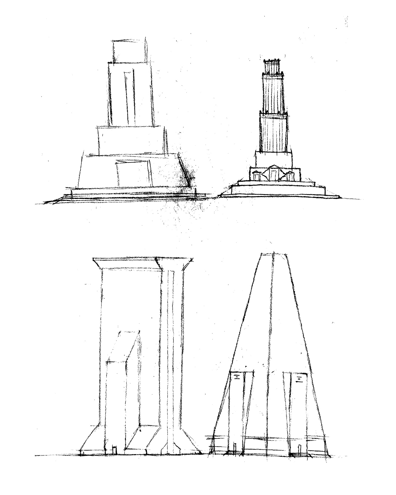
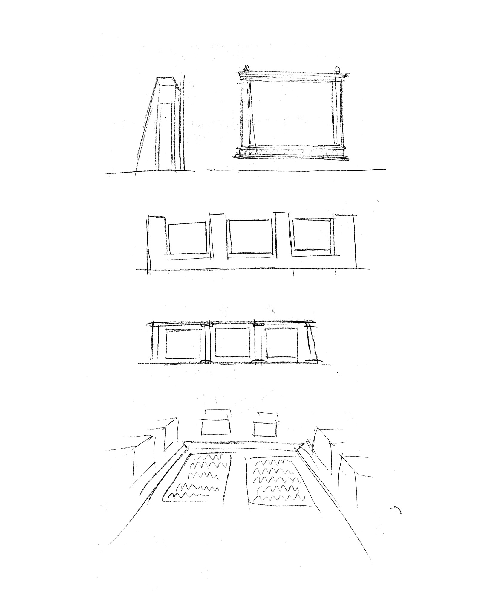
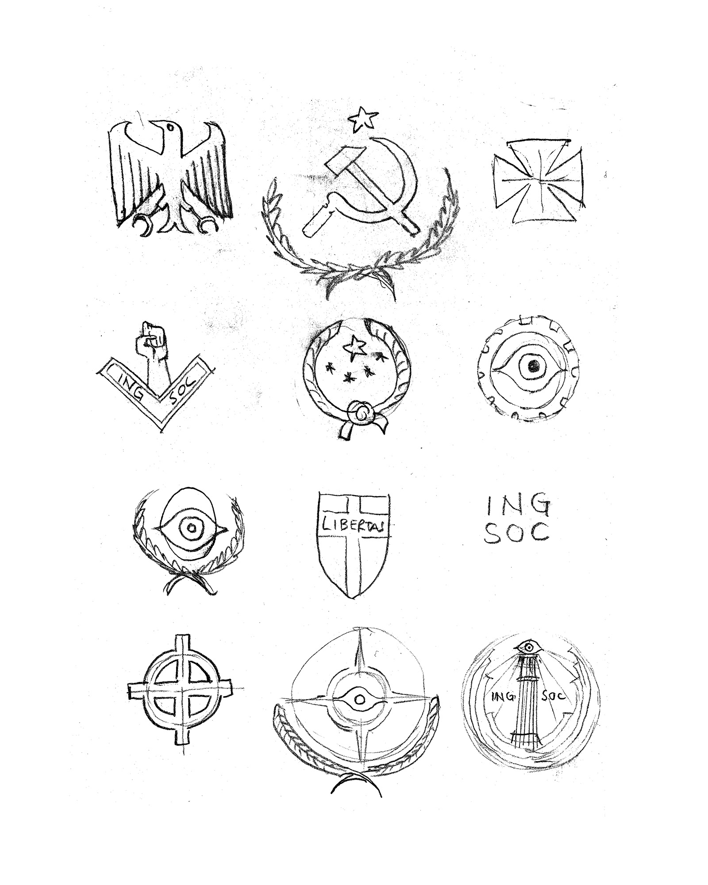
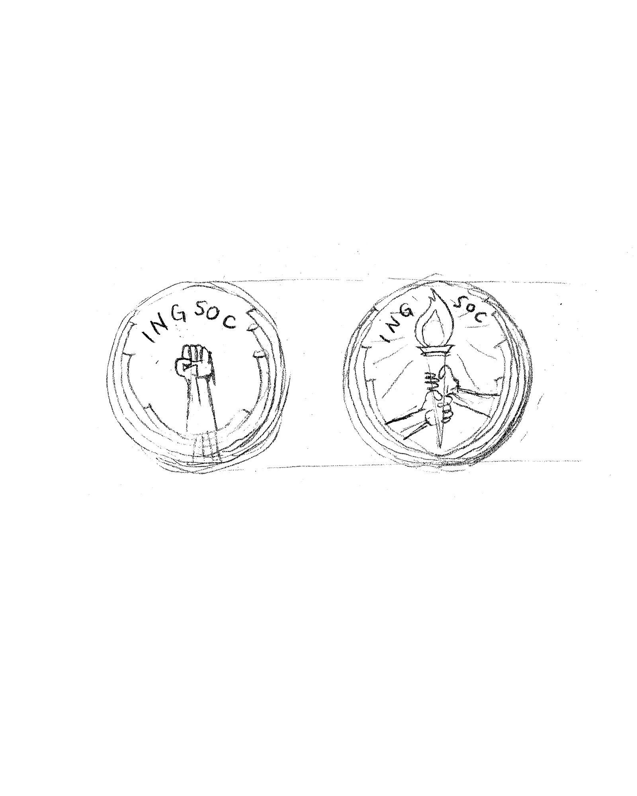
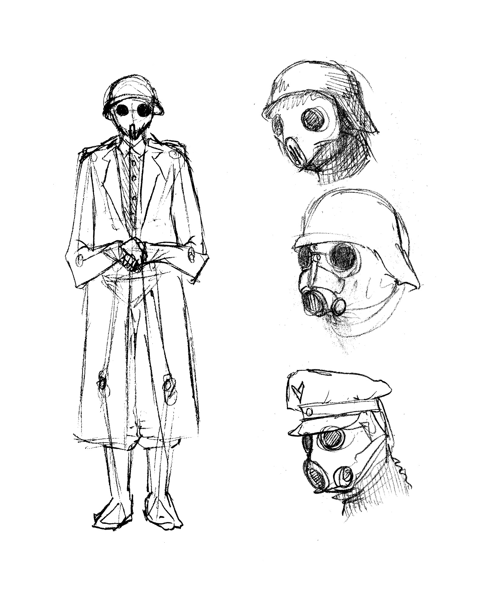
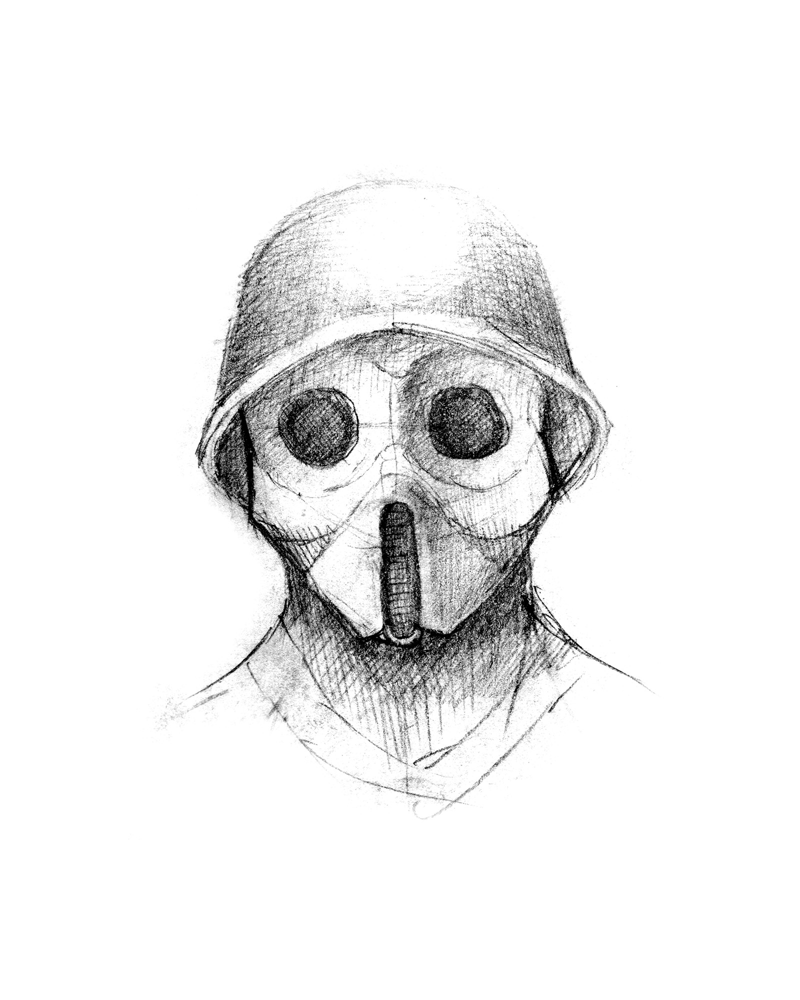
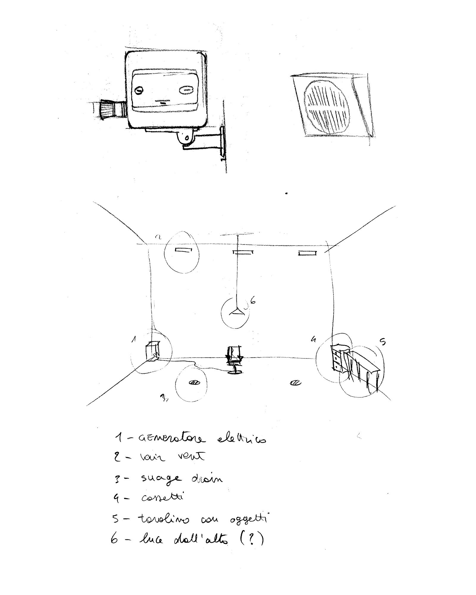
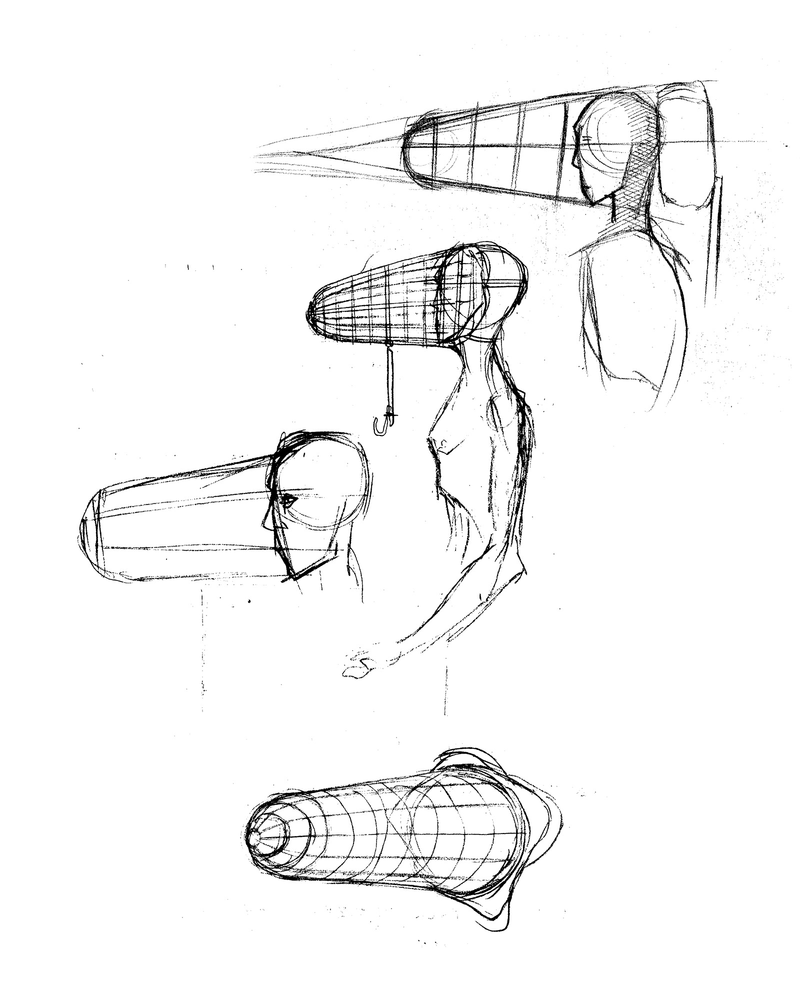
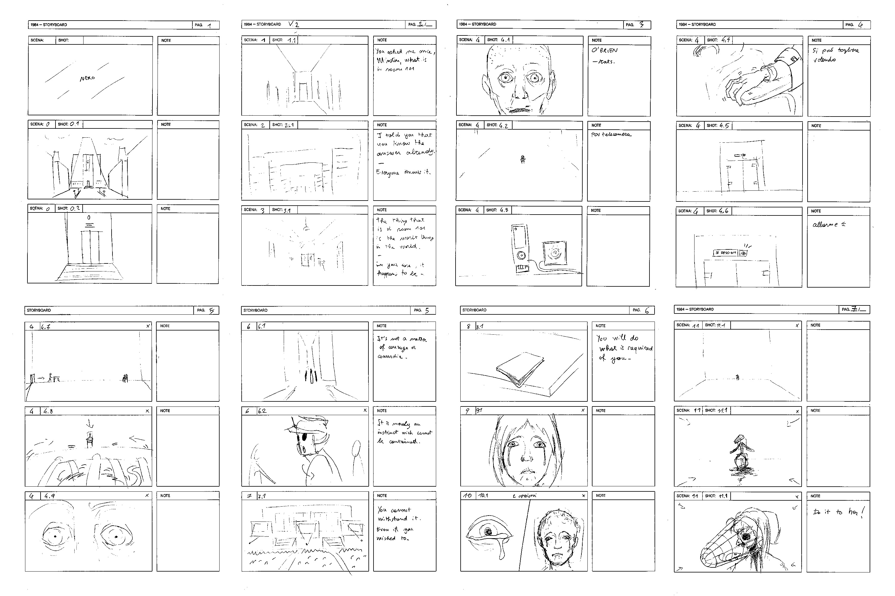
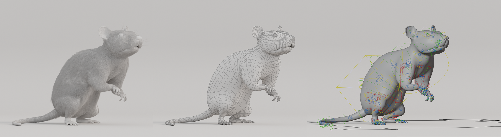

I first read 1984 in high school and was struck by the inventiveness and stark originality
of Orwell’s dystopia. Years later, at university, I fell in love with 3D animation and
decided with a friend to take on the ambitious challenge of making a 3D animated short
adaptation of the novel.
What began as a technical exercise soon became something else, something I truly cared about. Starting this as an absolute beginner in the craft, I’ve learned there’s no better way to understand something than by doing it, getting lost in the process, and embracing its unexpected turns.
This short film was created almost entirely with free, open-source tools and with the help of a generous community of storytellers. I hope this can serve as a small testament to curiosity, persistence, and creative stubbornness.
What began as a technical exercise soon became something else, something I truly cared about. Starting this as an absolute beginner in the craft, I’ve learned there’s no better way to understand something than by doing it, getting lost in the process, and embracing its unexpected turns.
This short film was created almost entirely with free, open-source tools and with the help of a generous community of storytellers. I hope this can serve as a small testament to curiosity, persistence, and creative stubbornness.
SKETCHES








MOODBOARD
STORYBOARD

ENVIRONMENTS
Ministry of Love – Boulevard
Ministry of Love – Hallway
Ministry of Love – Torture Rooms
Ministry of Love – Room 101
Thought Police Patrol
Rallies Square
Winston's Home
CHARACTERS
Rat
Julia with Rats Mask
PROPS
Thought Police Rifle